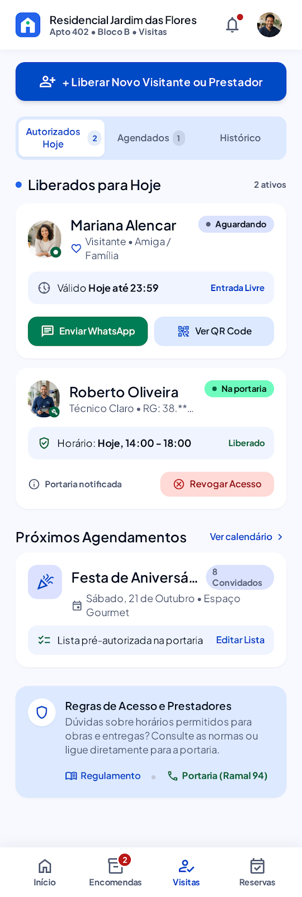
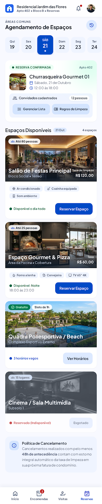

Amostra Stitch — páginas
Prints das telas geradas no Stitch. Abra o HTML interativo (code.html) ou o PNG em tela cheia.




Logos Stitch: amostra de logos (SVG + Stitch) · Galeria geral: telas/index.html